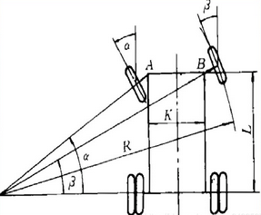
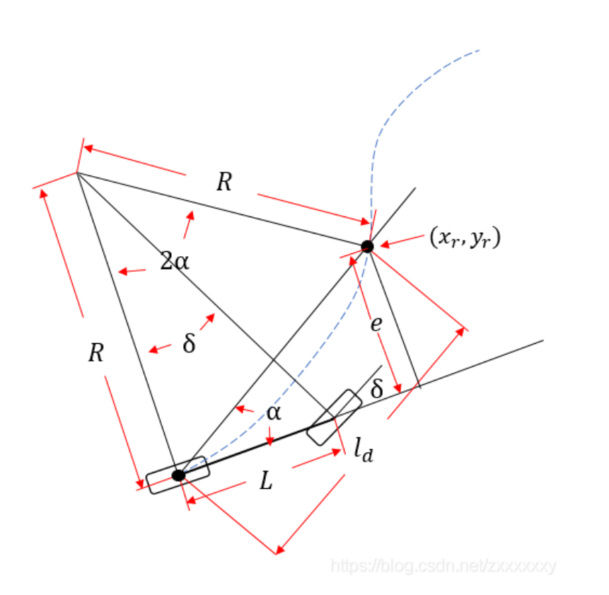

PurePursuit 纯预瞄算法
阿克曼转向
阿克曼转向是一种现代汽车的转向方式，在汽车转弯的时候，内外轮转过的角度不一样，内侧轮胎转弯半径小于外侧轮胎。根据阿克曼转向几何设计的车辆，沿着弯道转弯时，利用四连杆的相等曲柄使内侧轮的转向角比外侧轮大大约2~4度，使四个轮子路径的圆心大致上交会于后轴的延长线上瞬时转向中心，让车辆可以顺畅的转弯.下图就是理想的阿克曼转向。

$\alpha$汽车内轮转角
$\beta$汽车外轮转角
K两主销中心距离
L轴距
R转弯半径
转动形式:
- 仅前轮转向，后轮角度不变。
- 前后轮均可转向。
- (1) 前后轮角度相反，(2) 前后轮角度相同，这种模式可以实现全向运动。
转向特性的特点：
- 汽车直线行驶时，4个车轮的轴线都互相平行，而且垂直于汽车纵向中心面。
- 汽车在转向行驶过程中，全部车轮都必须绕一个瞬时中心点做圆周滚动。
核心公式
-
$\cot\beta - \cot\alpha = \cfrac{K}{L}$
-
$\tan\beta = \cfrac{L}{R}$
PurePursuit

上图所⽰为简化的车辆运动学⾃⾏车模型，其后轮中心在蓝⾊虚线表⽰的⽬标轨迹上。本算法通过控制前轮转⻆来追踪下⼀个路点，使车辆可以沿着经过⽬标预瞄点的圆弧⾏驶。
物理量描述如下:
$R(m)$ 转弯半径
$L(m)$ 轴距
$\delta$ 前轮转角
$l_d$ 预瞄距离
$x_r$预瞄点横坐标
$y_r$预瞄点纵坐标
$e$横向偏差
$\alpha$车身与预瞄点夹角
本质就是已知轴距，预瞄距离，横向偏差求前轮转角:
由正弦定理可以知道
- $\cfrac{l_d}{\sin2\alpha} = \cfrac{R}{\sin{\cfrac{\pi - 2\alpha}{2}}}$
- $\cfrac{l_d}{2 * \sin\alpha * \cos\alpha} = \cfrac{R}{\cos\alpha}$
- $R = \cfrac{l_d}{2 * \sin\alpha}$
其中
- $\sin\alpha = \cfrac{e}{l_d}$
那么就有
- $R = \cfrac{l_d^2}{2e}$
所以
- $\delta = \arctan\cfrac{L}{R} = \arctan\cfrac{2Le}{l_d^2}$
由上式可知控制器的本质就是对转角进行控制，以减少横向误差为目标的横向控制器。其中$\cfrac{2L}{l_d^2}$可视为控制器的P参数.L为车辆轴距,$l_d$为设定的预瞄距离.本控制器的控制效果主要取决于预瞄距离的选取,⼀般来说预瞄距离越⻓,控制效果会越平滑,预瞄距离越短，控制效果会越精确（同时也会带来⼀定的震荡）.预瞄距离的选取也和当前车速有关,如以下两种:
- $l_d = gv + l_f$
其中v为当前车速，g为⼀可调节的参数,$l_f$为预设前视距离
- $l_d = Av^2 + Bv + C$
其中$A=1/(2a_{max})$, $a_{max}$为最⼤制动加速度.$Av^2$表⽰最短车辆制动距离.B表⽰车辆遇到异常时需要的反应时间, $Bv$则为对应的反应距离, $C$表⽰车辆的最⼩转弯半径.
在实际使用的时候，通常不需要规划点切实等于预瞄点，而是在预瞄点附近找一个最接近的规划点，同时还可以用PID调整e值。
代码实现
预瞄
输入自车经纬高以及目标点经纬高，计算车轮转角
1
2
3
4
5
6
7
8
9
10
11
12
13
14
15
16
17
18
19
20
21
22
23
24
25
26
27
28
29
30
31
32
33
34
35
36
37
38
39
40
41
42
43
44
45
46
47
48
49
// 计算预瞄距离
double PurePursuit::cal_ld(double vel){
return 1.0 / ( 2 * _max_braking_acc) * vel * vel + _reactime * vel + _min_turning_radius;
}
// http://www.movable-type.co.uk/scripts/latlong.html
// 计算gps两点距离
double PurePursuit::cal_gps_distance(double lng1, double lat1, double lng2, double lat2){
double radius_of_earth = 6378137.0;
lng1 = lng1 / 180 * M_PI;
lat1 = lat1 / 180 * M_PI;
lng2 = lng2 / 180 * M_PI;
lat2 = lat2 / 180 * M_PI;
double delt_lat = lat2 - lat1;
double delt_lng = lng2 - lng1;
double a = pow(sin(0.5 * delt_lat), 2) + pow(sin(0.5 * delt_lng), 2) * cos(lat1) * cos(lat2);
double c = 2.0 * atan2(sqrt(a), sqrt(1.0 - a));
return radius_of_earth * c;
}
// 计算gps两点方位角
double PurePursuit::cal_gps_bearing(double lng1, double lat1, double lng2, double lat2){
lng1 = lng1 / 180 * M_PI;
lat1 = lat1 / 180 * M_PI;
lng2 = lng2 / 180 * M_PI;
lat2 = lat2 / 180 * M_PI;
double delt_lat = lat2 - lat1;
double delt_lng = lng2 - lng1;
double y = sin(delt_lng) * cos(lat2);
double x = cos(lat1) * sin(lat2) - sin(lat1) * cos(lat2) * cos(delt_lng);
return atan2(y, x);
}
// 计算横向偏差，yaw为车辆的航向角，正北方向的偏航
double PurePursuit::cal_lateral(double lng1, double lat1, double lng2, double lat2, double yaw){
double distance = cal_gps_distance(lng1, lat1, lng2, lat2);
double heading = cal_gps_bearing(lng1, lat1, lng2, lat2);
if (heading < 0) heading += 2 * M_PI;
heading -= yaw;
double x = sin(heading) * distance;
double y = cos(heading) * distance;
return y;
}
// 计算车辆转角，vel自身车速
double PurePursuit::cal_wheel_angle(double lng1, double lat1, double lng2, double lat2, double vel, double yaw){
double ld = cal_ld(vel);
double lateral = cal_lateral(lng1, lat1, lng2, lat2, 0);
return atan(2 * _wheel_base * lateral / ld / ld);
}
实现2：转换utm坐标系且使用目标点航向计算
详细可操作代码见脚本pure_pursuit_lateral_controller.py
1
2
3
4
5
6
7
8
9
10
11
12
13
14
15
16
17
18
19
20
21
22
23
24
25
26
27
28
29
30
31
32
33
34
35
36
37
38
39
40
41
42
43
44
45
46
from pyproj import Proj
proj_text = "+proj=utm +zone=50 +ellps=WGS84 +towgs84=0,0,0,0,0,0,0 +units=m +no_defs"
trsfm = Proj(proj_text)
path_point = read_global_path(log_path)
# 全局路径转utm
x, y = [], []
for point in path_point:
utm_x, utm_y = trsfm(point[0], point[1])
x.append(utm_x)
y.append(utm_y)
x = np.array(x)
y = np.array(y)
# 计算预瞄距离
ld = max(km.v * g_rate, 2)
dx = km.x - x[target_pts_idx]
dy = km.y - y[target_pts_idx]
euler_dist = math.sqrt(dx**2 + dy**2)
if euler_dist < ld:
target_pts_idx += 1
continue
print(target_pts_idx, ld, euler_dist, dx, dy, km.x, km.y)
cos_target_heading = cos(path_point[target_pts_idx][-1] * DEG_TO_RAD)
sin_target_heading = sin(path_point[target_pts_idx][-1] * DEG_TO_RAD)
# 计算横纵向偏差
# lateral_error = cos_target_heading * dy - sin_target_heading * dx
# print("lateral_error", lateral_error)
lateral_error = cos_target_heading * dx - sin_target_heading * dy
longtidual_error = sin_target_heading * dx + cos_target_heading * dy
print("lateral_error", lateral_error)
# print("longtidual_error", longtidual_error)
# print("euler_dist:", math.sqrt(dx**2 + dy**2))
# 计算前轮转角
alpha = atan(2 * 2.9 * lateral_error / euler_dist**2) + kp * lateral_error + ki * (lateral_error - last_error) + kd * (lateral_error - 2*(last_error) + last_last_error)
alpha = min(alpha, 30 * DEG_TO_RAD)
alpha = max(alpha, -30 * DEG_TO_RAD)